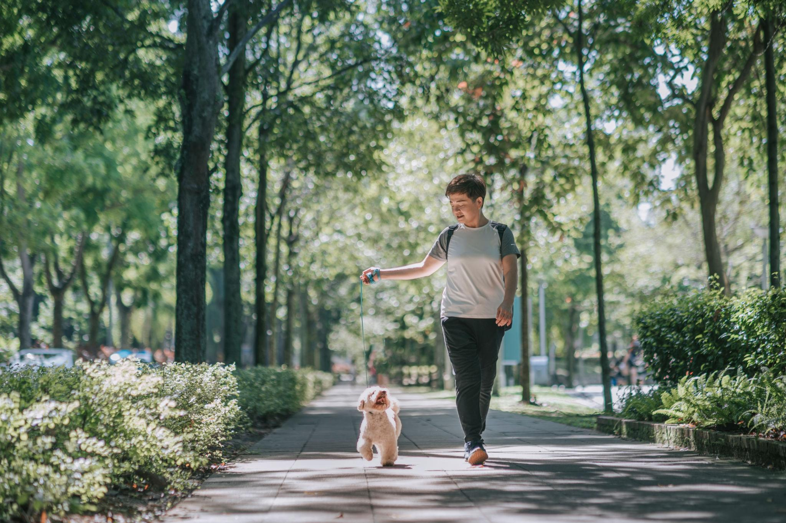

Wybór psa do mieszkania w bloku wymaga nieco więcej namysłu niż kierowanie się wyłącznie wyglądem lub popularnością rasy. Odpowiedni czworonóg może być szczęśliwy zarówno w domu z ogrodem, jak i w niewielkim mieszkaniu, o ile jego opiekun zapewni mu ruch, zajęcie umysłowe, kontakt z ludźmi oraz poczucie bezpieczeństwa. Dlatego najlepsze rasy psów do mieszkania w bloku to niekoniecznie wyłącznie najmniejsze psy. Liczą się również temperament, poziom energii, skłonność do szczekania i umiejętność odpoczywania w domu.
W tym poradniku przedstawiamy pięć ras, które mogą być dobrym punktem wyjścia dla osób rozważających życie z psem w mieście: cavalier king charles spaniela, pudla miniaturowego, maltańczyka, buldoga francuskiego i shih tzu. Ranking ma charakter orientacyjny, a nie medyczny czy hodowlany. Każdy pies jest indywidualnością, a zachowanie konkretnego zwierzęcia zależy między innymi od genów, socjalizacji, zdrowia, doświadczeń i codziennej opieki.
Jak wybrać psa do mieszkania w bloku?
Metraż mieszkania jest tylko jednym z elementów układanki. Przed wyborem rasy warto zastanowić się, ile czasu możesz poświęcić na spacery, zabawę i naukę. Pies, który ma niewielkie rozmiary, nadal potrzebuje codziennej aktywności. Niektóre małe rasy są bardzo żywiołowe i wymagają długich spacerów oraz zadań angażujących nos i umysł. Z kolei większy, spokojny pies może dobrze funkcjonować w mieszkaniu, jeśli jego potrzeby są zaspokojone.
Ważna jest także tolerancja na samotność. Większość psów to zwierzęta społeczne, które źle znoszą wielogodzinne pozostawanie bez kontaktu. Jeżeli domownicy pracują poza domem, trzeba zaplanować opiekę, stopniowe przyzwyczajanie do samotności lub pomoc zaufanej osoby. Nie należy zakładać, że mały pies automatycznie będzie łatwy w wychowaniu albo że nie będzie szczekał.
W bloku znaczenie mają również sąsiedzi i części wspólne budynku. Warto od początku ćwiczyć spokojne mijanie ludzi i psów na klatce schodowej, jazdę windą oraz odpoczywanie, gdy za drzwiami słychać odgłosy. Dobrze prowadzona socjalizacja nie oznacza zmuszania psa do kontaktu z każdym przechodniem. Chodzi o to, by mógł bez niepotrzebnego stresu funkcjonować w codziennym otoczeniu.
Top 5 ras psów do mieszkania w bloku
Poniższa lista prezentuje rasy, których rozmiar lub typowy temperament mogą ułatwiać życie w mieszkaniu. Nie jest to gwarancja, że każdy przedstawiciel danej rasy będzie pasował do każdego opiekuna. Przed podjęciem decyzji porozmawiaj z odpowiedzialnym hodowcą, organizacją adopcyjną lub lekarzem weterynarii i poznaj potrzeby konkretnego psa.
1. Cavalier king charles spaniel – łagodny pies rodzinny
Cavalier king charles spaniel jest niewielkim, zwykle towarzyskim psem, który często mocno przywiązuje się do domowników. Wiele cavalierów chętnie uczestniczy w codziennym życiu rodziny, odpoczywa obok opiekuna i z entuzjazmem wychodzi na spacery. Dzięki umiarkowanym rozmiarom łatwo zorganizować mu miejsce nawet w mniejszym mieszkaniu. Jego przyjazne usposobienie sprawia, że bywa rozważany przez osoby szukające psa do życia w mieście.
Nie oznacza to jednak, że cavalier jest jedynie kanapowym dodatkiem. Potrzebuje regularnych spacerów, zabawy, kontaktu z ludźmi i nauki spokojnego zostawania samemu. Długie uszy oraz jedwabista sierść wymagają pielęgnacji, w tym regularnego czesania i kontroli. Przed wyborem tej rasy szczególnie ważne jest sprawdzenie zdrowia rodziców i rozmowa o badaniach typowych dla rasy, ponieważ cavalier może być obciążony problemami kardiologicznymi i neurologicznymi.
Dla kogo? Dla osób, które chcą mieć bliskiego towarzysza codziennych aktywności i mogą poświęcić mu dużo uwagi. To nie jest najlepszy wybór dla domu, w którym pies regularnie miałby zostawać sam przez cały dzień.
2. Pudel miniaturowy – inteligentny i aktywny kompan
Pudel miniaturowy łączy niewielkie rozmiary z dużą potrzebą kontaktu i aktywności. Jest znany z inteligencji oraz chęci współpracy z człowiekiem, dlatego może dobrze odnajdywać się u opiekuna, który lubi uczyć psa nowych umiejętności. Trening krótkimi, pozytywnymi sesjami, zabawy węchowe i nauka sztuczek pomagają mu wykorzystać energię również wtedy, gdy pogoda nie zachęca do długiego spaceru.
W mieszkaniu trzeba zapewnić mu zarówno ruch, jak i zajęcie umysłowe. Nuda może prowadzić do niepożądanych zachowań, takich jak nadmierne szczekanie czy niszczenie przedmiotów. Charakterystyczna sierść pudla wymaga systematycznego czesania i regularnego strzyżenia. Osoby zainteresowane rasą powinny uwzględnić te zabiegi w budżecie i planie tygodnia. Określenie „pies dla alergika” bywa używane w odniesieniu do pudli, ale żadna rasa nie daje gwarancji braku reakcji alergicznej.
Dla kogo? Dla aktywnych opiekunów, którzy chcą pracować z psem i traktują naukę oraz zabawę jako część codziennej rutyny. Pudel miniaturowy może być świetnym partnerem do miejskich spacerów, ale nie powinien prowadzić wyłącznie siedzącego trybu życia.

3. Maltańczyk – mały pies mocno związany z opiekunem
Maltańczyk to niewielki pies do towarzystwa, który często dobrze czuje się blisko swoich ludzi. Jego rozmiary mogą ułatwiać organizację przestrzeni w bloku, a potrzeby ruchowe wielu przedstawicieli rasy można zaspokoić spacerami dostosowanymi do wieku, kondycji i temperamentu. Maltańczyk może być dobrym kompanem dla osoby, która szuka małego psa i jest gotowa zadbać o jego pielęgnację.
Długa, jasna sierść wymaga regularnego czesania, a okolice oczu i pyszczka potrzebują odpowiedniej higieny. Wiele osób decyduje się na krótszą fryzurę, która ułatwia codzienną pielęgnację. Mały rozmiar nie zwalnia z nauki dobrych manier: warto ćwiczyć spokojne powitania, chodzenie na smyczy i odpoczywanie na swoim posłaniu. Pies powinien mieć możliwość poznawania świata w bezpieczny sposób, a nie być stale noszony na rękach.
Maltańczyki mogą mocno przywiązywać się do opiekuna, dlatego samotność trzeba wprowadzać stopniowo. Jeśli pies reaguje szczekaniem na dźwięki z korytarza, pomocne może być ograniczenie bodźców, nagradzanie spokojnego zachowania i konsultacja z behawiorystą. Nie warto karać psa za lęk lub szczekanie bez ustalenia przyczyny.
Dla kogo? Dla osób, które chcą małego, kontaktowego psa i akceptują regularną pielęgnację. Maltańczyk będzie lepszym wyborem dla opiekuna, który ma czas na budowanie samodzielności psa i codzienne spacery.
4. Buldog francuski – spokojny domator, ale z ważnymi ograniczeniami
Buldog francuski jest często kojarzony z miejskim stylem życia. Ma kompaktową sylwetkę i wiele osobników lubi odpoczywać blisko człowieka. Może być czułym towarzyszem, a jego potrzeby ruchowe bywają umiarkowane w porównaniu z rasami stworzonymi do intensywnej pracy. To jednak rasa, przy której decyzję należy podejmować szczególnie odpowiedzialnie.
Buldogi francuskie mają skróconą kufę, co u części psów wiąże się z problemami z oddychaniem, tolerancją wysiłku i regulacją temperatury. Mogą źle znosić upał, intensywny wysiłek oraz stres. Przed wyborem psa trzeba dokładnie poznać ryzyka zdrowotne, sprawdzić dokumentację i skonsultować się z lekarzem weterynarii. Nie należy traktować chrapania, głośnego oddychania ani szybkiego męczenia się jako „uroczego standardu” rasy.
W mieszkaniu warto zadbać o komfortową temperaturę, spokojne miejsce do odpoczynku i spacery dostosowane do możliwości psa. Aktywność powinna być regularna, ale nie forsowna. Buldog francuski nie jest automatycznie psem bezobsługowym – wymaga troski, kontroli zdrowia i uważnej obserwacji.
Dla kogo? Dla opiekuna, który rozumie specyficzne potrzeby zdrowotne tej rasy i jest gotowy ponosić koszty profilaktyki oraz leczenia. Wybór powinien wynikać przede wszystkim z troski o dobrostan psa, a nie z mody.
5. Shih tzu – niewielki pies do spokojnego domu
Shih tzu to mały pies do towarzystwa, który często dobrze odnajduje się w spokojnym domowym otoczeniu. Zwykle nie potrzebuje tak intensywnej aktywności jak rasy pracujące, ale nadal wymaga codziennych spacerów, kontaktu z opiekunem i zabaw. Jego niewielki rozmiar ułatwia wspólne przemieszczanie się po mieście, choć każdy pies powinien nauczyć się bezpiecznego poruszania na smyczy.
Najbardziej charakterystycznym wyzwaniem jest pielęgnacja szaty. Długa sierść łatwo się plącze, dlatego wymaga regularnego czesania i kontroli. Krótsze strzyżenie może ułatwić utrzymanie jej w dobrym stanie, ale nie eliminuje potrzeby pielęgnacji. Ze względu na budowę pyska u shih tzu również mogą występować problemy oddechowe i okulistyczne. Warto wybierać odpowiedzialne źródło pochodzenia psa i zwracać uwagę na swobodne oddychanie oraz ogólną kondycję.
Shih tzu może być dobrym kompanem dla osoby, która ceni spokojniejsze tempo życia i ma czas na pielęgnację. Należy jednak pamiętać, że spokojny charakter nie oznacza braku potrzeb szkoleniowych. Nauka czystości, przywołania, spokojnego mijania innych psów i zostawania samemu jest ważna niezależnie od wielkości zwierzęcia.
Dla kogo? Dla osób szukających niewielkiego psa do towarzystwa, które mogą regularnie dbać o jego sierść i zdrowie. To propozycja dla opiekuna gotowego dostosować codzienną rutynę do potrzeb konkretnego zwierzęcia.
Jak przygotować mieszkanie na przyjęcie psa?
Przed przybyciem psa przygotuj spokojne miejsce do odpoczynku, miskę na wodę, odpowiednią karmę, smycz, szelki lub obrożę dopasowaną do budowy zwierzęcia oraz kilka bezpiecznych zabawek. Legowisko najlepiej ustawić w miejscu, w którym pies może odpoczywać bez ciągłego przechodzenia domowników. Nie musi być duże ani drogie – ważne, aby było wygodne i dawało poczucie bezpieczeństwa.
Zabezpiecz przewody, środki czystości, leki, małe przedmioty i rośliny, które mogą być niebezpieczne po zjedzeniu. Zwróć uwagę na balkon i okna. Pies nie powinien mieć możliwości samodzielnego wychodzenia na niezabezpieczony balkon ani wyglądania przez uchylone okno, jeśli grozi to wypadnięciem. Warto też ustalić domowe zasady: czy pies może wchodzić na kanapę, gdzie będzie jadł i jak domownicy będą reagować na skakanie lub żebranie.
W pierwszych dniach nie planuj wielu odwiedzin ani intensywnego zwiedzania okolicy. Daj psu czas na poznanie zapachów i dźwięków nowego miejsca. Wychodź na krótkie, spokojne spacery i nagradzaj pożądane zachowania. Jeśli adoptujesz dorosłego psa, poproś dotychczasowego opiekuna lub schronisko o informacje o jego przyzwyczajeniach, lękach, zdrowiu i dotychczasowej rutynie.
Na co zwrócić uwagę przed wyborem rasy?
Przede wszystkim oceń swój styl życia, a nie tylko wygląd psa. Zastanów się, czy lubisz długie spacery, czy masz czas na szkolenie, jak często wyjeżdżasz i kto zajmie się psem podczas nieobecności. Weź pod uwagę koszty karmy, profilaktyki, szczepień, zabiegów pielęgnacyjnych i ewentualnego leczenia. Nawet mały pies może generować znaczące wydatki, szczególnie jeśli ma predyspozycje do określonych problemów zdrowotnych.
Nie kupuj psa pod wpływem impulsu ani wyłącznie na podstawie zdjęcia w internecie. Jeśli rozważasz hodowlę, sprawdź jej wiarygodność, warunki utrzymania zwierząt, dokumentację zdrowotną i możliwość poznania matki szczeniąt. Unikaj sprzedawców, którzy nie chcą pokazać warunków, naciskają na szybką wpłatę lub oferują przekazanie szczeniaka w przypadkowym miejscu. Alternatywą jest adopcja – w schroniskach i fundacjach czekają psy o różnych rozmiarach, temperamentach i potrzebach.
Warto rozważyć również konkretnego dorosłego psa, a nie tylko rasę. W przypadku dorosłego zwierzęcia opiekun lub dom tymczasowy często może już opowiedzieć o jego zachowaniu w mieszkaniu, reakcji na hałas, stosunku do innych psów i tolerancji samotności. Taka wiedza bywa bardziej przydatna niż ogólny opis rasy.
Przykładowy plan dnia psa mieszkającego w bloku
Stały rytm dnia pomaga psu przewidywać, co wydarzy się za chwilę, i ułatwia mu odpoczynek. Nie ma jednego harmonogramu odpowiedniego dla wszystkich zwierząt, ale można potraktować poniższy przykład jako punkt wyjścia. Rano zaplanuj spacer, podczas którego pies będzie mógł spokojnie załatwić potrzeby, powęszyć i poruszać się w tempie dostosowanym do kondycji. Po powrocie podaj posiłek zgodnie z zaleceniami dotyczącymi konkretnej karmy i potrzeb zwierzęcia. Następnie zapewnij mu możliwość odpoczynku.
W ciągu dnia przyda się krótka sesja treningowa lub zabawa węchowa. Nie musi trwać długo – kilka minut skupionej pracy może być dla psa bardziej wartościowe niż chaotyczna, bardzo intensywna zabawa. Możesz schować kilka przysmaków w bezpiecznych miejscach, nauczyć psa dotykania dłoni nosem albo poćwiczyć spokojne czekanie na swoją kolej. Takie aktywności pomagają budować komunikację i dają psu okazję do podejmowania prostych decyzji.
Po południu lub wieczorem zaplanuj dłuższy spacer, jeśli pozwalają na to wiek, zdrowie i temperament psa. Wybieraj różne, ale bezpieczne trasy, aby zwierzę mogło poznawać nowe zapachy i otoczenie. Nie każdy spacer musi oznaczać intensywny marsz. Dla wielu psów możliwość spokojnego eksplorowania trawnika i węszenia jest równie ważna jak pokonywany dystans. Po aktywności zadbaj o wyciszenie i nie zachęcaj do ciągłej zabawy, gdy pies próbuje odpocząć.
Jeśli pies zostaje sam w domu, ćwicz ten element stopniowo i dostosuj długość nieobecności do jego możliwości. Zacznij od bardzo krótkich wyjść, obserwuj reakcję zwierzęcia i nie zwiększaj trudności zbyt szybko. Kamera może pomóc sprawdzić, czy pies rzeczywiście odpoczywa, czy może przez dłuższy czas szczeka, chodzi po mieszkaniu lub próbuje wydostać się z pomieszczenia. W razie utrzymujących się trudności skonsultuj się z lekarzem weterynarii lub wykwalifikowanym behawiorystą.
Mały pies nie oznacza małych obowiązków
Jednym z częstych błędów jest założenie, że niewielki pies potrzebuje jedynie krótkiego wyjścia przed budynek. Każdy pies powinien mieć możliwość eksplorowania otoczenia, poznawania zapachów i realizowania naturalnych zachowań. Oczywiście długość oraz intensywność aktywności trzeba dopasować do konkretnego zwierzęcia. Szczeniak, senior, pies po zabiegu i zdrowy dorosły osobnik będą potrzebować innego planu. W razie wątpliwości dotyczących wysiłku najlepiej poradzić się lekarza weterynarii.
Warto także pamiętać o nauce odpoczynku. Niektóre psy łatwo się pobudzają, szczególnie gdy z okna widzą przechodniów, słyszą szczekanie innych zwierząt albo reagują na dźwięk domofonu. Możesz ograniczyć dostęp do okna, zasłonić dolną część szyby lub ustawić legowisko w spokojniejszym miejscu. Nagradzaj momenty, w których pies sam wybiera odpoczynek. Dzięki temu mieszkanie staje się przewidywalnym i bezpiecznym środowiskiem, a nie miejscem nieustannego reagowania na bodźce.
Nie zapominaj o nauce chodzenia na smyczy. Wąskie chodniki, rowery, hulajnogi, dzieci i inne psy sprawiają, że miejska okolica bywa wymagająca. Ćwicz mijanie z odpowiedniej odległości i nagradzaj psa za zwracanie uwagi na opiekuna. Nie zmuszaj go do bezpośredniego witania się z każdym napotkanym zwierzęciem. Możliwość spokojnego odejścia od trudnej sytuacji jest ważną częścią poczucia bezpieczeństwa.
Podsumowanie – jaka rasa będzie najlepsza do bloku?
Nie istnieje jedna uniwersalna odpowiedź na pytanie, jakie są najlepsze rasy psów do mieszkania w bloku. Cavalier king charles spaniel może odpowiadać osobie szukającej czułego towarzysza, pudel miniaturowy aktywnemu opiekunowi lubiącemu szkolenie, a maltańczyk i shih tzu osobom gotowym na regularną pielęgnację małego psa. Buldog francuski wymaga szczególnie świadomej decyzji ze względu na możliwe problemy zdrowotne związane z budową.
Najważniejsze jest dopasowanie potrzeb psa do możliwości domowników. Każdy pies potrzebuje ruchu, stymulacji umysłowej, odpoczynku, opieki weterynaryjnej i relacji z człowiekiem. Jeśli zapewnisz mu te warunki, mieszkanie w bloku nie musi być przeszkodą w prowadzeniu dobrego, ciekawego psiego życia. Przed ostateczną decyzją poznaj konkretnego psa i skonsultuj wybór z osobą, która zna jego potrzeby.
Przydatne źródła
- Fédération Cynologique Internationale (FCI) – informacje o rasach i klasyfikacji kynologicznej.
- RSPCA – materiały dotyczące dobrostanu i opieki nad zwierzętami.
- The Kennel Club – opisy ras i informacje dla przyszłych opiekunów.
Kategoria: Rasy psów
Tagi: pies do bloku małe rasy psów pies w mieszkaniu wybór psa